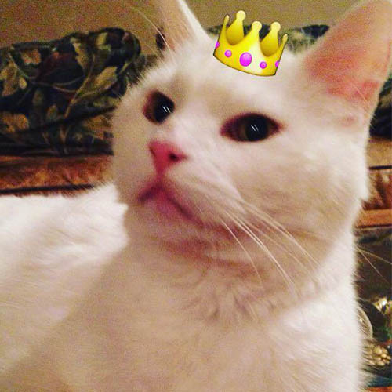
Chad and his crown
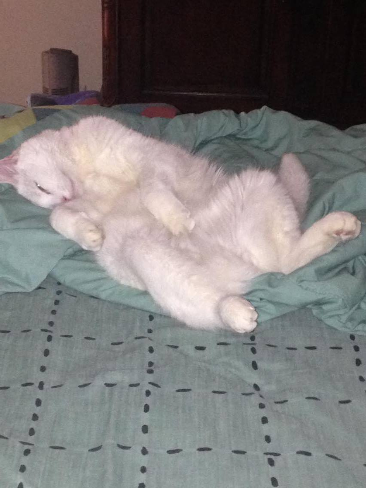
Chad melting into a puddle
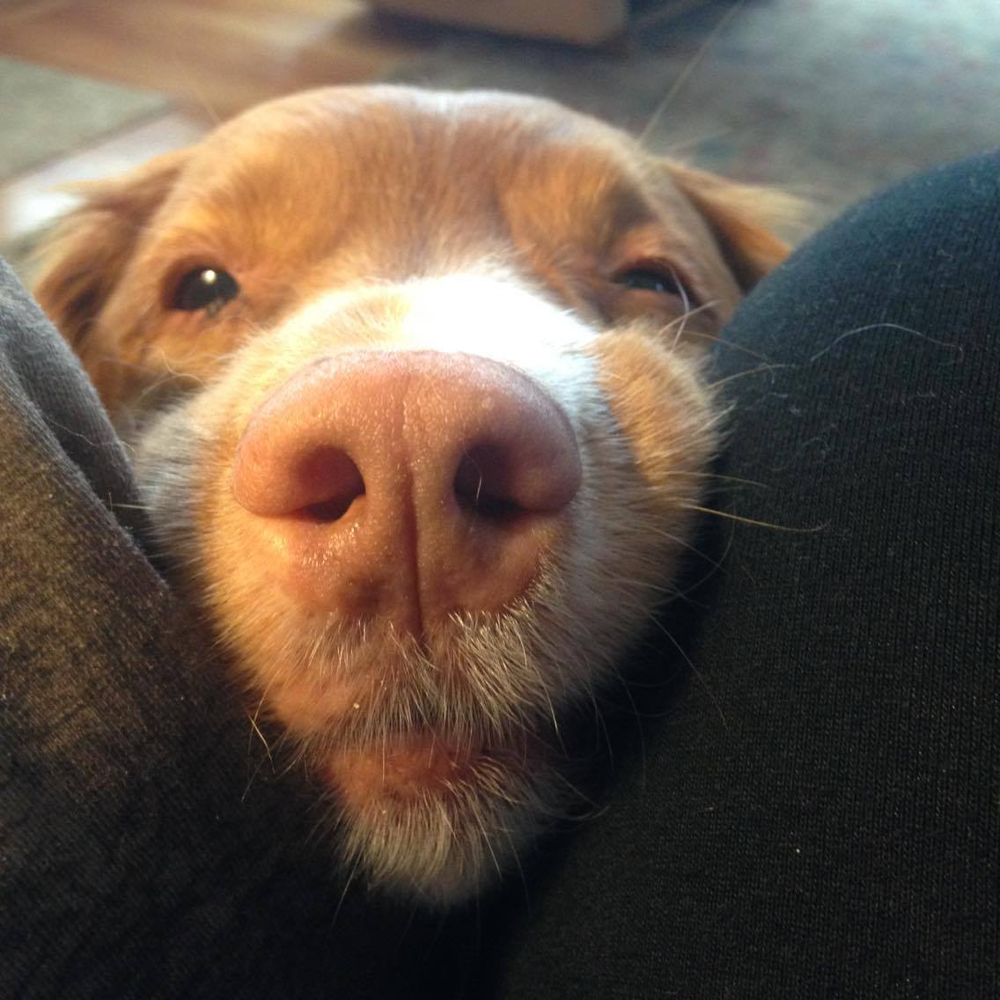
What Chad has to deal with on the daily
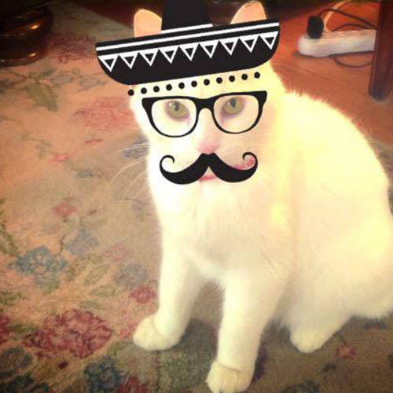
Chad in one of his many disguises
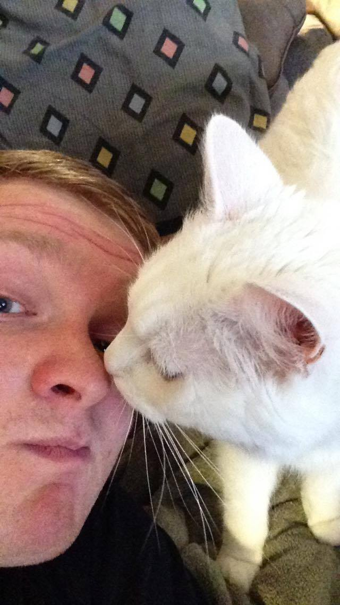
Chad being a merciful leader
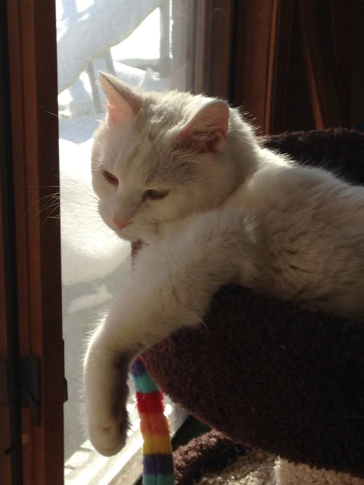
Chad thinking about life
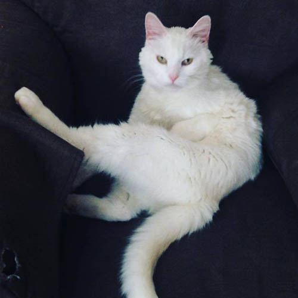
Caught in the act
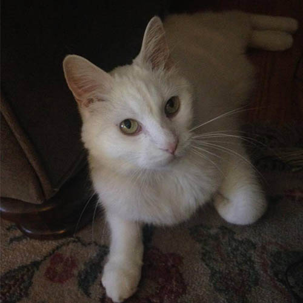
"You rang?"
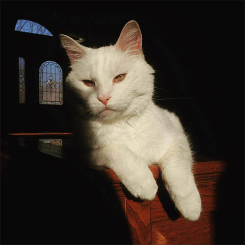
International Cat of Mystery
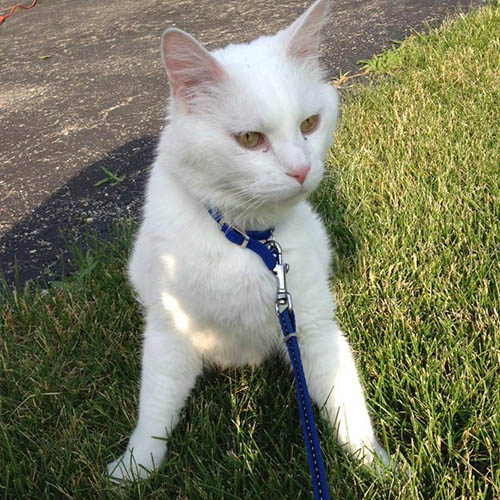
Chad exploring his territory
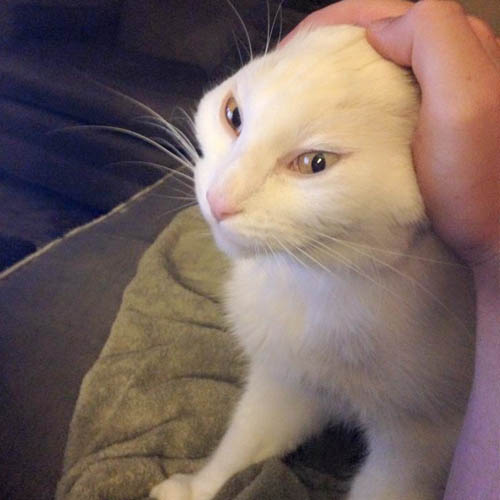
The "Full Face" pet (patent pending)
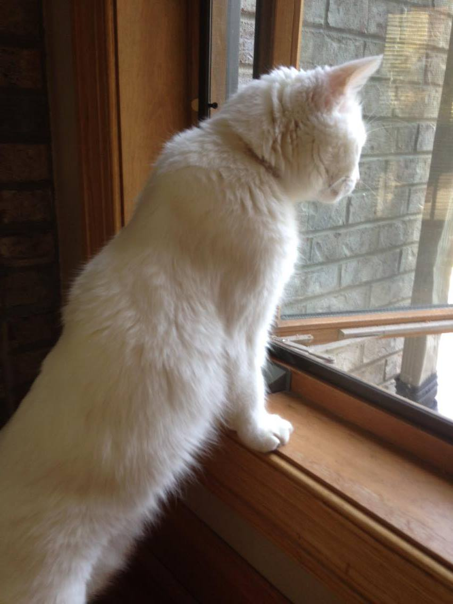
Looking out over his kinddom